A RASTREABILIDADE BRASIL SA é uma empresa 100% nacional que
oferece solução completa de track&trace.
Temos expertise para atender à RDC 54 em toda a
cadeia de produção de medicamentos, desde a geração de dados
até a sua dispersão nas farmácias.
Em parceria com a Atlantic Zeizer, empresa Alemã líder em
geração de dados de segurança e módulos de rastreabilidade na Europa,
desenvolvemos um sistema formado por hardware e software de
alta confiabilidade e eficiência, que podem ser integrados com ERPs e
adaptados as necessidades nacionais.
Se você se viu aqui, venha fazer parte desse time!
POR DENTRO DA R&B
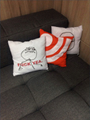
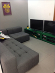
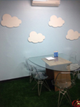
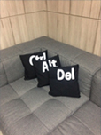
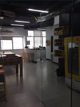

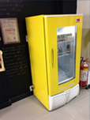

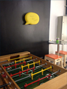
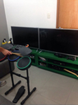
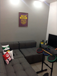
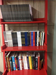
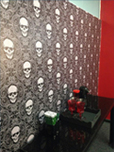
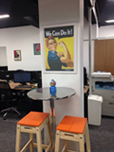
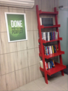